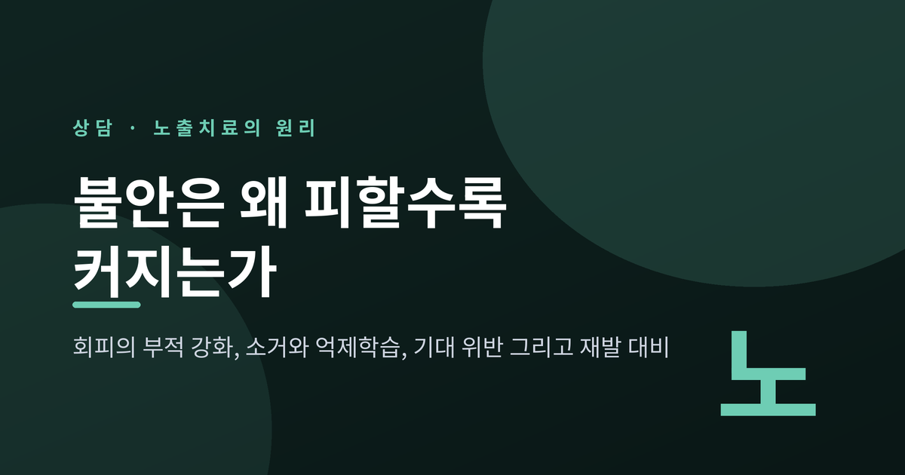
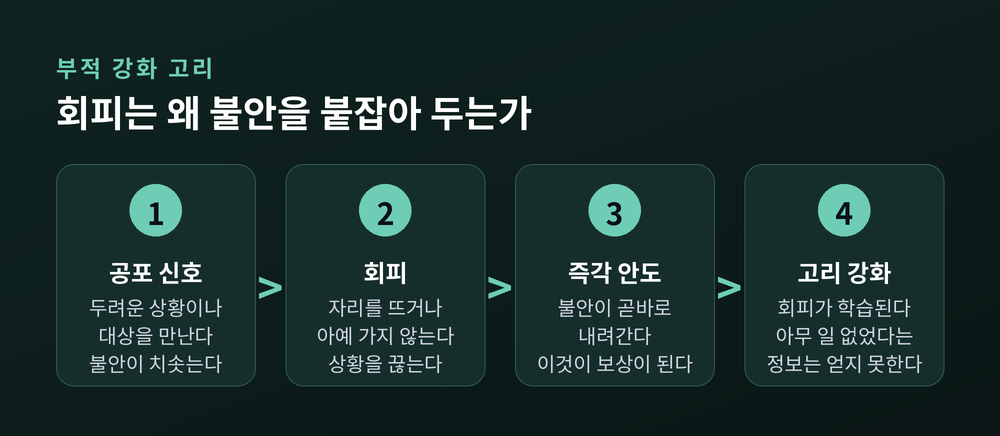
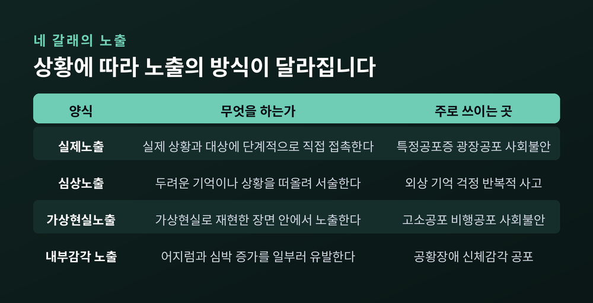
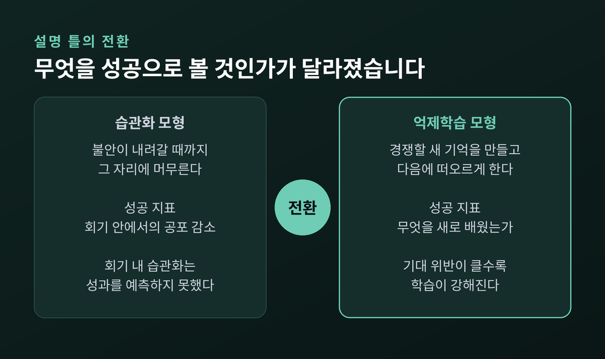
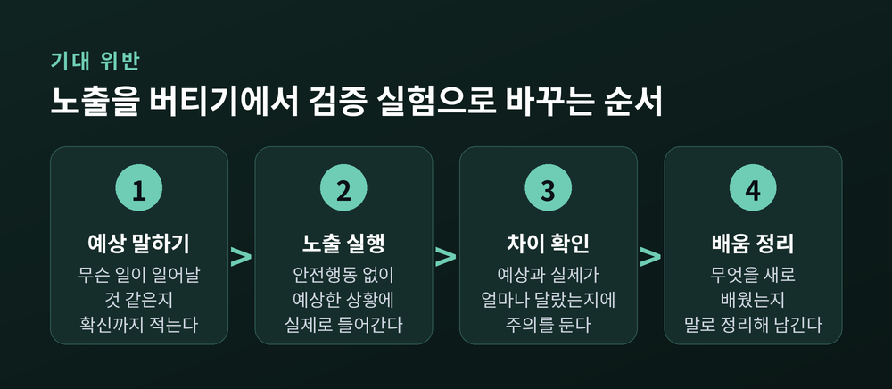
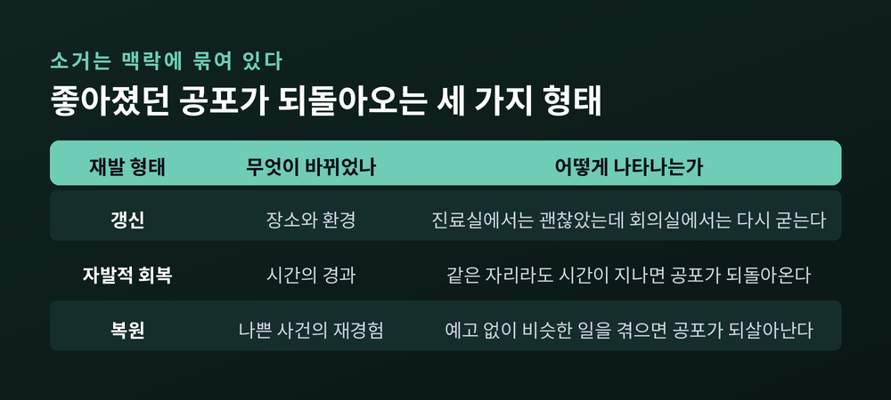

회피의 부적 강화 고리, 소거와 억제학습, 기대 위반과 안전행동, 그리고 재발 대비

이번 글에서는 노출치료의 원리를 정리해 보겠습니다. 불안을 피하면 왜 당장은 편해지는데 시간이 갈수록 더 힘들어지는지, 그리고 마주하는 방식이 어떻게 설계되어야 실제로 효과가 나는지를 다룹니다. 최근 이 분야의 설명 틀이 크게 바뀌었다는 점도 함께 짚겠습니다.
먼저 한 가지 분명히 말씀드립니다. 이 글은 자가치료 매뉴얼이 아닙니다. 노출은 훈련된 전문가와 함께 계획할 때 안전합니다.
오래된 설명 하나가 여전히 가장 정확합니다. 모러의 2요인 이론입니다.
1요인은 고전적 조건형성입니다. 중립적이던 대상이 나쁜 경험과 짝지어지면서 공포 신호가 됩니다. 2요인은 조작적 조건형성, 그중에서도 부적 강화입니다.
핵심은 두 번째입니다. 피하면 불안이 즉시 내려갑니다. 그 안도감이 곧 보상이 됩니다. 보상을 받은 행동은 다음에 더 빨리, 더 자주 나타납니다.
엘리베이터를 예로 들어 보겠습니다. 한 번 갇혔던 경험 뒤에 계단으로 돌아섭니다. 계단으로 오르면 심장이 가라앉습니다. 그 순간의 안도가 회피를 가르칩니다. 다음 날은 고민하는 시간조차 줄어듭니다. 몇 달 뒤에는 엘리베이터가 있는 건물 자체를 피하게 됩니다.
여기서 진짜 손실이 생깁니다. 회피는 현실 검증의 기회를 없앱니다. "타도 아무 일이 일어나지 않는다"는 정보를 얻을 통로가 막힙니다. 그래서 위험이 사라진 지 오래인데도 공포는 그대로 남습니다.
정확히 말하면 불안이 저절로 자라는 것이 아닙니다. 불안이 줄어들 기회가 차단되는 것입니다.

노출치료는 실험실의 소거 학습을 임상으로 옮긴 것입니다. 공포 신호를 나쁜 결과 없이 반복해서 만나게 하는 절차입니다.
흔한 오해가 하나 있습니다. 소거가 기존 기억을 삭제한다는 생각입니다. 그렇지 않습니다.
바우턴의 연구가 정리한 결론은 명확합니다. 소거는 지우기가 아닙니다. 기존의 위협 연합 위에 새로운 억제 기억을 덧쓰는 작업입니다. 두 기억이 같은 신호에 나란히 붙어 있게 됩니다.
그래서 결정적인 변수는 하나입니다. 그 순간 어느 쪽 기억이 먼저 떠오르는가. 이 관점은 뒤에 나올 재발 이야기와 곧바로 연결됩니다.
노출은 무작정 부딪히는 일이 아닙니다. 순서가 있습니다.
치료자와 내담자가 함께 불안위계를 만듭니다. 두려운 상황들을 적어놓고 각각 SUDS로 평정합니다. SUDS는 주관적 고통 점수로, 보통 0에서 100까지 씁니다. 막연한 공포를 추적 가능한 숫자로 바꾸는 장치입니다.
발표 불안이라면 이런 사다리가 나옵니다. 혼자 원고 읽기 20점, 거울 보고 말하기 35점, 가족 한 명 앞에서 말하기 50점, 소규모 모임에서 3분 발언 70점, 회의에서 준비 없이 의견 내기 90점.
낮은 칸부터 올라갑니다. 그리고 상황에 따라 노출의 방식이 달라집니다.

내부감각 노출은 설명이 조금 더 필요합니다. 공황을 겪는 분들이 두려워하는 대상은 상황이 아니라 몸의 감각인 경우가 많습니다. 심장이 뛰는 느낌, 어지러움, 숨이 얕아지는 느낌입니다. 그래서 빨대로 숨쉬기나 제자리 회전처럼 그 감각을 일부러 만들어 봅니다. 목표는 하나입니다. "불편하지만 위험하지는 않다"를 몸으로 배우는 것입니다.
다만 이 방식은 신체 질환 감별이 먼저입니다. 임의로 따라 하실 일이 아닙니다.
예전 지침은 단순했습니다. "불안이 충분히 내려갈 때까지 그 자리에 머무르십시오." 회기 안에서 공포가 얼마나 떨어졌는지가 성공의 척도였습니다. 습관화 모형입니다.
지금은 다르게 봅니다.
크래스크 연구진이 확인한 바에 따르면, 회기 내 습관화는 치료 성과를 유의하게 예측하지 못했습니다. 노출 중 공포가 많이 떨어진 사람이 이후 자기보고 척도나 행동회피검사에서 더 나은 결과를 보이지는 않았습니다. 2008년 연구에서 습관화는 노출치료의 필수 요소 자리에서 내려왔습니다.
대신 억제학습 모형이 자리를 잡았습니다.
노출의 목적은 공포 반응을 깎아내는 것이 아닙니다. 기존 위협 연합과 경쟁할 새로운 비위협 연합을 만들고, 그것이 나중에 잘 떠오르게 하는 것입니다. 2022년에는 억제 인출 접근으로 한 번 더 갱신되었습니다.
질문이 바뀐 셈입니다. 예전에는 "불안이 얼마나 내려갔습니까"를 물었습니다. 지금은 "무엇을 새로 배웠고, 그 배움이 다음에도 떠오릅니까"를 묻습니다.

억제학습 모형의 중심 원리는 기대 위반입니다. 예상과 실제 결과의 차이가 클수록 학습이 강해집니다.
그래서 절차가 이렇게 짜입니다.
노출 전에 자기 예상을 말로 꺼냅니다. "무슨 일이 일어날 것 같습니까. 얼마나 확신하십니까." 발표 불안이라면 "머리가 하얘져서 30초 이상 말이 끊길 것이다, 확신 80퍼센트" 같은 문장이 나옵니다. 노출 중에는 예상과 실제의 차이에 주의를 둡니다. 노출 뒤에는 배운 것을 언어로 정리합니다.
이 한 줄이 노출의 성격을 바꿉니다. 버티기가 아니라 검증 실험이 됩니다.

안전행동은 불안을 낮추려고 몰래 하는 작은 행동들입니다. 주머니 속 약을 손으로 확인하기, 출구 가까운 자리에 앉기, 발표 중 청중과 눈 마주치지 않기, 대화 중 원고를 손에 쥐고 있기 같은 것들입니다.
문제는 귀인입니다. 아무 일도 일어나지 않았을 때 그 이유를 "내가 약을 챙겼기 때문"으로 돌리게 됩니다. 기대 위반이 일어나지 않습니다. 노출은 했는데 배움은 남지 않습니다.
주류 권고는 제거입니다. 안전신호 제거는 표준 전략 목록에 들어 있습니다.
다만 한계도 함께 말씀드리는 편이 정직하겠습니다. 안전행동이 언제나 해롭다는 주장은 근거가 갈립니다. 해로운 효과가 재현되지 않은 연구가 있고, 치료 초기 참여를 돕기 위한 제한적 사용을 검증한 무작위대조시험도 있습니다. 아직 정리되지 않은 쟁점입니다.
이완도 같은 함정에 빠질 수 있습니다. 이완이 안전행동처럼 쓰이면 오히려 학습을 무디게 만든다는 지적이 있습니다.
노출이 잘 진행되어도 공포가 되살아나는 일이 있습니다. 실패가 아니라 예측된 현상입니다.
소거 기억은 맥락에 묶여 있기 때문입니다. 맥락이 바뀌면 억제 기억의 인출 우위가 사라지고, 원래의 공포 학습이 다시 표현됩니다.
세 가지 형태로 나타납니다.
임상적 함의는 분명합니다. 한 장소, 한 시간대, 한 가지 자극으로만 연습하면 일상으로 옮겨가지 않습니다. 그래서 여러 맥락에서, 자극을 조금씩 바꿔가며, 나중에 그 배움을 불러올 단서까지 만들어 두는 전략이 함께 쓰입니다.

효과 근거는 두텁습니다.
APA는 노출 기반 인지행동치료를 특정공포증의 선택 치료로 봅니다. 영국 NICE는 PTSD 지침에서 개인 외상초점 인지행동치료와 EMDR을 1차 치료로 권고하며, 약물치료보다 먼저 제공하도록 하고 있습니다.
메타분석 결과도 같은 방향입니다. 특정공포증 무작위대조시험 33편을 모은 분석에서 노출 기반 치료는 무처치 대비 큰 효과크기를 보였고, 위약이나 다른 적극적 심리치료보다도 우세했습니다. 실제 접촉이 다른 방식보다 치료 직후에는 우세했지만, 추후 관찰에서는 그 차이가 유지되지 않았습니다.
한편 노출이 언제나 최선인 것은 아닙니다. 공황장애, PTSD, 강박증에서는 인지치료와 노출치료의 효능 차이 근거가 없었고, 사회공포증에서는 인지치료가 더 효과적이라는 강한 근거가 보고되었습니다.
한계도 분명합니다.
불안장애 인지행동치료의 중도탈락률은 약 19.6퍼센트입니다. 강박증 노출·반응방지는 10.24퍼센트로, 약물치료 17.29퍼센트나 위약 23.49퍼센트보다 오히려 낮습니다. 탈락률만 보면 관리 가능한 수준입니다. 그러나 완전 관해에 이르는 비율은 절반 수준이라는 지적이 따라옵니다. 좋은 치료이지만 만능은 아닙니다.
보급에도 장벽이 있습니다. 아동·청소년 불안을 다루는 임상가 조사에서 상위 장벽은 회기 길이, 훈련 부족, 보호자 반응에 대한 우려였습니다. 치료자 자신의 불안이나 내담자에게 해가 갈까 하는 두려움도 자주 지목됩니다.
여기까지 읽으시면 왜 혼자 하기 어려운지 짐작하실 것입니다.
노출은 위계 설정, 안전행동 식별, 기대 명시, 반복과 일반화, 재발 대비로 이어지는 설계된 절차입니다. 이 중 어느 하나만 빠져도 노출은 그냥 힘든 경험으로 끝나기 쉽습니다.
특히 안전행동은 본인이 알아차리기 어렵습니다. 밖에서 보는 눈이 필요합니다.
그리고 다음의 경우에는 혼자 시도하지 마시기 바랍니다.
강한 반응이 예상되는 상황을 혼자 밀어붙이면, 배움 대신 압도되는 경험만 남을 수 있습니다.
정리하면 이렇습니다.
회피는 즉시 편해지기 때문에 학습됩니다. 그리고 그 대가로 새로운 정보를 얻을 기회를 가져갑니다. 노출은 그 기회를 되돌려 주는 절차입니다. 다만 공포를 지우는 방식이 아니라, 경쟁할 새 기억을 만들고 그것이 필요할 때 떠오르도록 훈련하는 방식입니다.
"노출의 목표는 덜 무서워지는 것이 아니라, 다르게 배우는 것입니다."
마지막으로 권유 하나를 남깁니다. 불안이나 공포로 일상이 좁아지고 있다면, 혼자 방법을 설계하기보다 정신건강의학과 전문의나 인지행동치료 훈련을 받은 상담 전문가와 상의하시길 권합니다. 노출은 함께 계획할 때 가장 안전하고, 가장 잘 작동합니다.
두려운 자리에 다시 앉을 수 있겠냐고 물으신다면, 혼자가 아니라면 그렇다고 답하겠습니다.